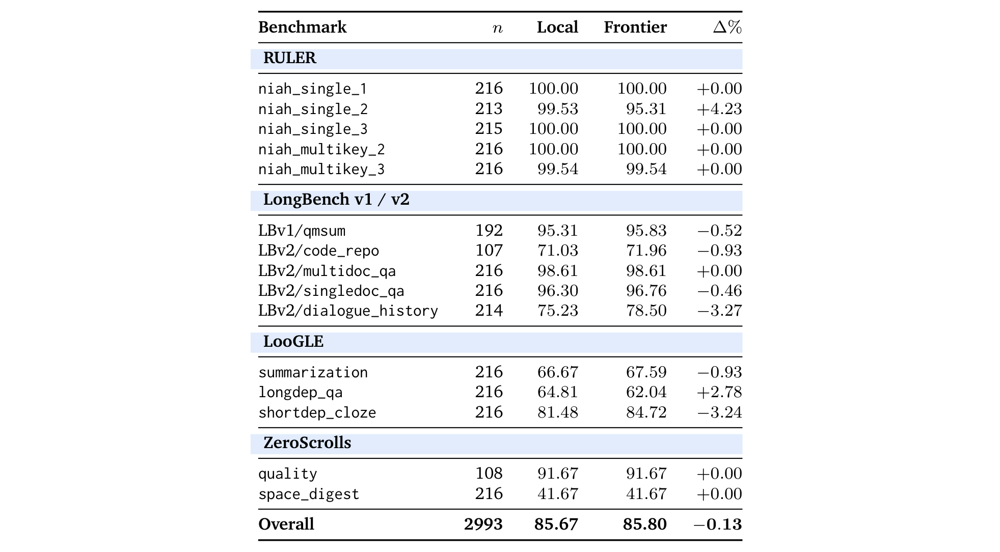
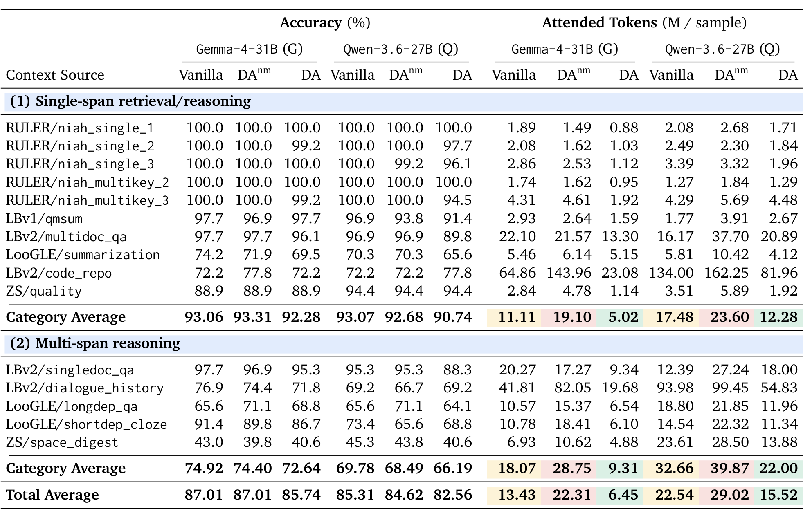
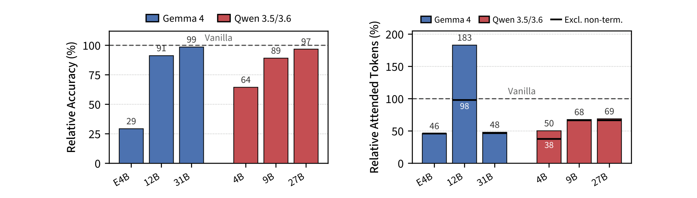
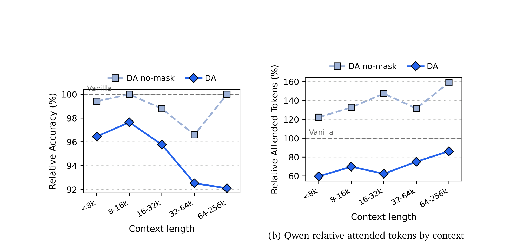

速览:一图看懂 DA
这篇论文回答了一个看似简单的问题:模型既然"知道"该看上下文的哪一部分,为什么不让它自己说出来?现有的稀疏注意力方法都在模型外部用代理分数"猜"哪些 token 重要,而 DA 直接把注意力范围的选择权交给模型本身——模型在思维链中用 <global> / <focus> / <local> 三种标签声明"我接下来要看哪里",推理引擎像解析工具调用一样解析这些声明,然后只读取对应的 KV cache 块。
整篇论文的运行机制可以浓缩在 Figure 1 里:左上是构造好的 prompt(系统指令 + 12 个"magic chunk"分段的长上下文 + 问题 + DA 指令);右侧是模型的响应,它在三种模式间自由切换;底部的注意力掩码矩阵显示——每个推理步骤真正被读取的 KV 位置(实心)远小于完整上下文(虚线部分被跳过)。

💡 点击任意图片可查看原始高清大图(300 DPI),再次点击或按 Esc 关闭。
背景:长上下文解码为什么贵
每生成一个 token,都要读完整份 KV cache
Transformer 解码时,每个步骤都要对所有前文 token 做注意力计算。这意味着即便用户只是问一个 100 万 token 对话里的某个细节,全局注意力层在生成回复的每一个 token 时都得把整个上下文的 KV cache 从显存里读一遍。论文给了一个直观的量级:Qwen-3.5-397B-A17B 在 1M token 上下文下,每个序列每步要加载约 15 GB KV cache——与加载整个模型 17B 激活参数的带宽需求相当。而且这个读取不随 batch 摊销:每个序列都有自己的 KV cache,必须逐序列读取。
注意力天然稀疏,但"哪些 token 重要"事先未知
与这种穷举式读取形成对照的是:大量实证研究表明注意力权重其实高度集中在上下文的极小部分(Child et al. 2019;Zhang et al. 2023;Tang et al. 2024),而且稀疏模式每步都在漂移。难点在于——真实的注意力分数只有算完整个注意力矩阵才知道,想"先挑出重要的 token 再算注意力"在逻辑上是先有鸡还是先有蛋。已有工作绕过这个死结的两条路线,论文都指出了其软肋:
- 静态启发式(StreamingLLM 的 recency、H2O 的历史注意力幅度):规则固定,无法预见未来查询需要哪些 token,长上下文性能明显退化。
- 轻量扫描(Quest、SparQ、Double Sparsity、DeepSeek 的 DSA 索引器等):每步对 KV cache 的一个廉价代理表示打分,只读最高分的子集。常数因子变小了,但每步复杂度仍是 O(N)——扫描本身还是要把整个上下文"过"一遍。
换一个问法:模型自己不是已经知道了吗?
论文的切入点非常优雅:已有研究表明语言模型的隐藏状态里其实编码了未来 token 的信息(Pal et al. 2023;Wu et al. 2024),而 CoT 提示能把这些潜伏计算"表面化"为可解释的文本(Wei et al. 2022)。既然 CoT 已经把"想什么"暴露成了文本,为什么不把"看哪里"也暴露成文本?
此前唯一做过类似尝试的 Self-Selected Attention Span(Jin et al. 2024)需要按任务逐一微调、手工设计上下文划分和标注语法,且只在 2K token 上下文内验证过。这篇论文证明:到了 2026 年的模型上,这件事一个固定的 task-agnostic prompt 就能零样本激发——覆盖 15 项长上下文任务、两个模型家族、最高 244K token 的上下文,无需任何参数更新。
方法:Declarative Attention 协议
三种注意力模式
DA 把生成过程切分为注意力范围稳定的连续片段,每段用预定义标签声明范围。三种模式的分工如下:
| 模式 | 上下文分段可见性 | 协议中的角色 |
|---|---|---|
| <global>(默认) | 全部分段 | 导航:纵览全文,确定下一个要聚焦的分段,简述理由(不在这一步推理答案本身) |
| <focus magic_chunks="K"> | 仅被点名的分段 | 提取:从指定分段里逐字取出需要的值(名称、数字、日期等) |
| <local> | 一个分段都不看 | 综合:只基于问题 + 已提取的值 + 已有响应做规划与合成 |
无论哪种模式,三类内容始终可见:问题、DA 指令、以及模型自己已经生成的响应。模式之间唯一的区别是长上下文分段区域的可见范围。一个来自正文的完整例子(Acme 公司何时上市):
<global> I need the founding year and the IPO year. The company history in Magic Chunk 2 should state the founding. </global> <focus magic_chunks="2">"Acme Corp was founded in 2003 in San Jose."</focus> <global> The IPO year is still missing. Magic Chunk 7 covers Acme's financial milestones. </global> <focus magic_chunks="7">"Acme Corp went public on the NYSE in 2011."</focus> <local>2011 - 2003 = 8 years.</local> <answer>8 years</answer>
注意 <local> 段:模型做减法时上下文完全不可见,只有它自己先前"抄下来"的两个年份。DA 不限制每种模式怎么用、何时用、用几次——顺序、次数全部由模型自己决定,协议只提供语法和零样本引导。
上下文交付:切成"magic chunk"的模拟工具调用
要用 <focus>,模型得能"指名"上下文区域,所以长上下文要先切成可寻址分段。论文在两个层面都对齐了模型训练时见过的边界:
- 分段(segmentation):目标 2048 token、硬上限 2560 token。只在超过上限的单元上切,并按"段落空行 → 单换行 → 句末 → 子句末 → 词边界"的层级从粗到细找最粗的可用边界,因此切缝永远不会落在词中间(整段 base64 这种无空格串保持原子不切)。分段拼接起来精确还原原文,是无损划分。
- 格式(formatting):每个分段以 Magic Chunk N 为头,包装进一段"模拟工具调用转录"——看起来就像模型此前用
get_magic_chunk工具把文档一段段取回来的一样,但工具从未真正执行,所有内容在生成开始前就已就位。这样分段边界恰好落在模型后训练中无比熟悉的 user/assistant/tool 轮次特殊 token 上,模型对"第 N 段从哪到哪"的追踪远比任意新分隔符可靠。起名 "magic chunk" 也是有意为之:强调这是任意的检索切分,别和文档自己的章节结构混淆。
解码时干预:DA 状态机
推理引擎旁运行一个 DA 状态机,从默认的 global 状态开始,流式读取模型输出:遇到开标签的闭括号">"(<focus magic_chunks="K"> 或 <local>)就切换模式,遇到对应闭标签就回到 global。注意 <global> 标签本身不产生任何状态转换——global 就是声明之间的默认态,这个标签纯粹是提示结构,帮模型把推理组织成"范围已声明"的连续片段。
零样本 prompt 里的三条软性要求(Appendix F)很能体现作者对失败模式的观察:(1)至少用一个 <focus>——"跳过聚焦直接猜"是最常见的失败;(2)以一个 <local> 收尾作为"承诺步骤",防止模型取了一堆值却忘了问题问的是哪个;(3)在 <local> 里别试图"回忆"没聚焦过的分段内容——那是在猜,需要值就回 <global> 重新定位。
系统实现:vLLM 集成与 roofline 账本
块对齐的原地掩码,FlashAttention 一行不改
vLLM 把 KV cache 存在固定大小的小块里(通常 16–32 token),注意力内核按整块读取——掩码若只散落丢弃单个 token,内存读取量一个字节都不会少。所以 DA 状态机在块粒度上施加掩码:把要保留的 token 区间向外取整到块边界,保证模型声明的任何 token 绝不会被丢。代价只是每条保留区间两端至多多读一个块(几十个 token,对比 2048 token 的分段可以忽略)。最终产物就是一个普通的块列表,现有内核(FlashAttention、Triton paged-attention)原样运行,只是读得更少——与 Native Sparse Attention 的 block-sparse 原理同源。
工程接入方式很轻:DA 状态机通过 vLLM attention metadata builder 上的钩子实现,每个解码步重写请求的 KV-cache 块表,让内核只看到保留的块。不修改任何内核,不改调度器。Qwen-3.6 的全局层走 FlashAttention,Gemma-4 的混合注意力走 Triton paged-attention 内核,两个后端用同一套块表改写逻辑。
任何模式下都保持可见的三块区域(Appendix B):(1)注意力锚——prompt 前 16 个 token,用固定的短系统指令占位,保证上下文永远不会进入 sink;(2)局部窗口——从问题到 prompt 末尾,模型永远知道自己在答什么;(3)已生成的响应。<focus> 在此之上保留被点名的分段;<local> 只留这三块。
DA 什么时候回本?roofline wall-time 给答案
DA 用多 15–35% 的解码步换更低的每步注意力成本。在什么部署形态下这是净赚?论文用 roofline wall-time 来记账:每个操作按它自己的硬件天花板计费,把一个响应所有解码步的开销求和。这个量只依赖硬件目标,不依赖 batch size 等运行选择:
其中 work 是计算受限操作的 FLOPs 或内存受限操作的字节数,$R$ 是峰值算力/峰值带宽,$u$ 是实际达到的利用率。大 batch 下两类操作各就各位:
关键的结构性差异:FFN 的权重加载随 batch 摊销,大 batch 下变成计算受限,墙钟时间只随解码步数增长;注意力的 KV 读取是逐序列的,始终内存受限,墙钟时间同时随上下文长度和解码步数增长。所以在优化过的大 batch、长上下文部署里,注意力项压倒 FFN 项——Qwen-3.5-397B-A17B 在 1M 上下文的例子中,单步注意力读取 15.4 GB(约 2.7 ms),而 17B 激活参数的 matmul 只需 34 GFLOPs(约 0.019 ms),差约 145 倍(在 MFU/MBU 合理波动范围内是 120–255 倍,结论不依赖具体取值)。DA 的每步节省恰好砸在解码开销最集中的地方。
实验设置与主结果
模型、任务与三臂对比
六个模型两个家族:Gemma-4-{31B, 12B, E4B} 与 Qwen-3.6-27B、Qwen-3.5-{9B, 4B},原生 256K 输入(E4B 为 128K)。主对比用两个最大的模型。基准套件覆盖 15 个长上下文来源,按任务分为两类:单跨度检索/推理(大海捞针、单文档 QA 等)与多跨度推理(多文档 QA、对话历史、长依赖 QA 等),上下文从 6K 量级一直跨到平均 1M 的代码仓库:

三个实验臂共享相同的最终答案规范(<answer> 标签),由同一个 LLM 裁判打分,这样可以干净地拆解两个因素:
- Vanilla:原始上下文平铺 + 简短指令 + 完整因果注意力。Vanilla → DAnm 的差距 = 分块 prompt 格式的影响。
- DA-no-mask(DAnm):完整 DA prompt 模板,但注意力不掩码。DAnm → DA 的差距 = 注意力掩码的影响。
- DA:完整协议。
评分:LLM 裁判及其校验
自由生成的答案没法用精确匹配,论文先用 Gemini-3-Flash 为每题生成严格的接受/拒绝评分细则,再用开动 thinking 的 Qwen-3.5-4B 当裁判。裁判靠谱吗?Appendix D.2 用分层抽样的 2,993 条响应做了校验——与前沿裁判 Gemini-3.1-Pro 的逐条判定一致率 98.53%(κ=0.940),逐格准确率相关性 Pearson r=0.992,分歧对称(McNemar p=0.65):


主结果:省一半注意力,掉一个多点精度
全部 15 项任务的结果汇总在 Table 2。两个要点先看总平均:Gemma-4-31B 上注意力读取降 52.0%(13.43M → 6.45M token/响应)、精度降 1.27pp;Qwen-3.6-27B 上降 31.1%(22.54M → 15.52M)、精度降 2.75pp。

但总平均掩盖了机制层面的故事。Figure 2 把三臂拆成"准确率 / 解码步数 / 注意力 token"三个维度,每个都按各自模型的 vanilla 归一:

拆解两个影响因素的账本(DAnm 对比):分块 prompt 格式本身几乎无损——Gemma 上 DAnm 准确率与 vanilla 完全打平(87.01% vs 87.01%),Qwen 只差 0.69pp;但 DAnm 的注意力读取比 vanilla 高 66.2% / 28.8%。加上掩码后,相对 DAnm 砍掉 71.1%(Gemma)与 46.5%(Qwen)的读取,把"高于 vanilla 66.2%"翻转为"低于 vanilla 52.0%"。精度方面,相对 DAnm 的掉幅(−1.27pp / −2.06pp)构成了 DA 掉分的大头——也就是说,掩码既是全部效率的来源,也是大部分精度代价的来源,而格式近乎免费。
规模化:模型越大越准,上下文越长越省
模型规模:精度差距单调收窄
DA 对模型提出了两个复合要求:既要遵守协议(可解析的标签、合法的 chunk 引用、连贯的模式顺序),又要在信息受限下答对题——两者都吃通用能力。Figure 3 显示相对精度在两个家族内都随规模单调上升:Gemma 从 E4B 的 29% 升到 31B 的 99%,Qwen 从 3.5-4B 的 64% 升到 3.6-27B 的 97%。最小的 Gemma-4-E4B 崩到 29%,直接原因是协议遵守失败——它的 <focus> 解析成功率只有 58%(31B 上是 99%,见第 7 节 Figure 6):是"不会用",而不是"用了答不对"。

上下文长度:精度稳住,绝对节省猛涨
把 15 个来源按上下文长度分桶池化(Gemma-4-31B,Figure 4):相对精度到 32K 都贴着 vanilla(差距约 1pp 内),之后温和下滑到最长桶的约 96%;关键对照是——不掩码的 DAnm 曲线没有这个下滑,说明长上下文端的精度代价来自掩码而非分块格式。绝对读取节省则随上下文急剧增长:短上下文约省 1M token/响应,最长桶(64–256K)约省 21M。每步掩码约省恒定比例(~50%),所以绝对节省 ∝ 上下文长度——收益最大的地方恰是解码最贵的地方。

Figure 10 用"比例视角"呈现同一份数据:DA 在每一个上下文桶内都只读 vanilla 的 50–64%,比例几乎恒定——这正是"恒定比例节省 × 不断增长的总盘"的组合,解释了绝对值为何随长度线性放大。

Qwen 侧:同样的每步节省,更依赖全局模式
Qwen-3.6-27B 的对应结果(Appendix E)揭示了家族间一个有趣的差异——机制上两者每步节省相当,但 Qwen 在长上下文下把更多 token 花在不掩码的 <global> 模式里,总节省因此缩水:


效率账本与模式级分析
roofline 墙钟时间:0.71× / 0.77×
把注意力节省换算成单卡 B200、bf16、MFU 40%、MBU 70% 下的理论解码墙钟时间,每个解码步拆成三笔账:matmul(所有投影/FFN/输出头的矩阵乘,计算受限,只随步数增长)、全局内存(全局注意力层的 KV 读取——DA 唯一能压的项)、局部内存(高效层的固定每步读取:Gemma 的 SWA KV cache、Qwen 的 GDN 递归状态,与上下文无关):

这份账本的每个输入都可以复核。两个模型的常数(Table 4)直接来自公开配置;两个随实验臂变化的量——解码步数 $D$ 与注意力 token 总量 $A$(Table 5)——从生成的响应里实测:


以 vanilla Gemma-4-31B 为例过一遍完整推导(Appendix C.8):
三项相加 269.1 ms;把 DA 臂的 $D{=}448$、$A{=}6.45\text{M}$ 代入即得 192.3 ms。作者很诚实地点明:这是给定利用率下的理论天花板,不是实测墙钟——不含 prefill(分离式部署下在另一个池)、不含归一化/旋转位置编码等零碎、按 token 粒度计读取(实际块对齐内核在全局项上会多读几个百分点)。
模式级分析:钱花在哪、省在哪
DA 自己生成的 token 都花在哪种模式里?Gemma-4-31B 上 <global> 只占生成 token 的约 27%,<focus> + <local> 占 73%——而后两者才是廉价模式,每 token 平均只读 vanilla 步长的约 12% 与 6%:

协议遵守度:能力门槛在哪
DA 的可靠性取决于模型能否稳定吐出可解析的控制 token。Figure 6 给出两个指标:<focus> 解析成功率(能解析为合法 chunk 引用的比例)随规模在两个家族同步爬升——58%(E4B)→ 99%(31B),89%(Qwen-4B)→ 99%(27B);而每响应的 focus 尝试次数在 1.37–1.85 的窄带里波动、与规模无关:强模型赢在解析更可靠,而不是调得更少。尝试次数本身是零样本伪影——由模型自己选择怎么用协议,而非任务最优。

诚实的失败案例:六种任务上的两种结构性失配
论文没有回避失败场景(Appendix D.4)。15 个主基准之外有六类来源 DA 处理不好,作者把它们归为两种与三模式分解的结构性失配(而非机制弱点)——注意:即便在这六个来源上,DA 的每步注意力依然下降 39–67%:

<focus> 只看被点名的分段,信息进不来,精度从 84.21 崩到 58.84(即便读取还降了)。第二类:输出长度随文档增长。fwe 词频枚举、summ_screen_fd 逐段摘要、book_sum_sort 全文排序、in_context_learning 逐例推理——输出单位随文档伸缩,解码步数撑爆总量(17.84M→21.20M)。作者的修法:第一类靠"结构感知分段"(保表格完整)与 map-reduce 式逐段扫描+脚手架累积;第二类把长输出路由进 <focus> 以保持每步有界,或干脆用 SFT/RLVR 教模型这两种分解策略。
讨论、局限与编者点评
DA 在 2026 年的架构版图里还有多大空间?
一个自然的质疑:各家都在激进压缩 KV cache(MLA、token 合并、索引器稀疏注意力),全局注意力的读取成本是否还会是解码的主项?论文在附录里做了一次截至 2026 年 8 月的架构普查,先看每上下文 token 的 KV 字节:

把同样的 roofline 分解推到 1M token 上下文(Table 7):全注意力组(Qwen-3.6-27B、Gemma-4-31B、Qwen3.8-Max、Kimi-K3、MiniMax-M3)的注意力占单步解码时间 94.11–99.37%;即便自带稀疏机制的索引器组(DeepSeek-V4-Pro/Flash、GLM-5.3-Flash)也占 56.49–97.50%——每一行注意力都是主导项,而自带稀疏机制的模型恰恰是它主导得最少的,说明 DA 式的干预方向与架构演进并不冲突。

不过这个"主导份额"强烈依赖上下文长度(Table 8):同样的模型在 244K(本文实验的有效上限)下全注意力组降到 79.6–97.5%、索引器组 24–90%,到 128K 时索引器组已有三行跌破 50%。MFU/MBU 的取值倒是无关大局(扫遍 40–60% / 60–85% 的报告区间,1M 份额波动多在 3 分以内)——上下文长度才是决定性变量,这也是论文把 1M 写进标题级结论的原因。作者同时押注:窗口长度历史上随单 token 成本下降而持续变长,1M 已是前沿标配,聚合注意力成本不会消失。

Agentic 场景:检索没有解决 DA 解决的问题
有人会说:agent 通过工具调用增量取回上下文,不就没有"长上下文"问题了?论文的反驳很清晰:检索决定什么进入上下文,DA 决定进入之后看哪里——是两层正交的决策。检索甚至会让问题更糟:每次工具结果都留在上下文里陪跑整个 episode,而它通常只对发起它的那几步相关。随着轮次累积,agentic 上下文恰恰落在 DA 节省最大的区间(长上下文 + 每步只读局部)。而且 agentic 场景自带天然分段(工具调用、用户轮次、检索段落),不需要本文的"人造 magic chunk"。
DA 是"系统 2"的稀疏注意力
论文给 DA 一个很好的定位:已有稀疏方法从内部激活每步推断掩码,是"系统 1";DA 让模型用显式推理决定看哪里,是"系统 2"。这个表述带来三个实际推论:(1)策略可以用一句指令改变,无需重训;(2)随模型规模自动改进,协议一字不动;(3)可以像系统 2 推理本身一样用 RL 优化(奖励同时计准确率与注意力效率)。还有一个被作者反复强调的副产品——注意力计划天然可审计:驱动 KV 读取的那些 token 就是人能读的那些 token,对 AI 安全的 CoT 监督(supervision)是同一件事的两面。与最相近的 SSAS(按任务训练、2K 上下文、两个任务)相比,DA 证明了这一行为可以零样本、一个固定 prompt、15 个任务、244K 上下文地泛化。
与现代推理技术的叠加
- 与轻量扫描稀疏注意力(如 DSA):互补——扫描恰好可以服务 DA 昂贵的 global 步,声明则在其余模式里携带节省;DA 改块表不碰内核,集成很轻。
- 与投机解码(speculative decoding):正交叠加——DA 压每步成本,投机解码把多步并成一次校验;校验照样只读被掩码的 KV。模式内掩码固定,起草在单一掩码下进行,只在罕见的模式切换处重置投机状态。
- 与 KV 卸载(offloading)与上下文压缩:DA 在切换关注集之前就用明文"预告"了下一步要看哪——这正是预取(prefetch)需要的句柄:离焦分段可以溢出到主机内存,声明一出现就边解码边预取回来。现有压缩(如 Claude/OpenAI 的 compaction)是破坏性的(摘要替换原文、KV 丢弃、找回需重新 prefill);DA 不改序列、掩码可逆,离焦内容的缓存始终有效——作者由此提出"可逆上下文压缩"的愿景。
局限(作者自陈)与编者点评
- 零样本策略次优:DA 多跑约 1/3 解码步,分解方式未必贴合任务形状;CoT 已被 SFT/RLVR 深度优化,DA 的模式选择策略同样可以被后训练调优——这是作者留给未来工作的最大空间。
- 人造分段:固定上下文基准强迫用启发式切块;agentic 场景有天然分段,DA 可能更自然。
- 仅非思考模式:模型在 thinking 内跟不上协议;但业界推理模型本来就训练了工具调用间的交错思考,把 DA 暴露成标准工具声明后有望进入"推理轨迹最长"的场景。
- global 模式的成本:global 步以全量注意力为代价、占 DA 读取的 80% 以上;作者提议导航时只看一份"上下文内索引"(每段一句话的描述),量级可比上下文本身小几个数量级。
术语速查
阅读中遇到缩写,可随时回到这里;正文里带虚线下划线的缩写悬停即可见释义。
| 缩写 | 全称 | 一句话解释 |
|---|---|---|
| DA | Declarative Attention | 本文协议:模型在思维链中用标签声明注意力范围,引擎据此掩码 KV cache |
| DAnm | DA-no-mask | 消融臂:用完整 DA prompt 但不施加注意力掩码,用于隔离掩码的贡献 |
| KV cache | Key-Value Cache | 推理时缓存的前文键/值张量;解码每步都要从中读取,是长上下文解码的带宽瓶颈 |
| CoT | Chain-of-Thought | 思维链:让模型先写出推理步骤再作答;DA 把"看哪里"也写进这条链 |
| magic chunk | — | DA 对上下文分段的称呼(~2048 token/段),以模拟工具调用转录的形式交付 |
| SWA | Sliding Window Attention | 滑动窗口注意力:只看最近固定窗口,Gemma-4 的高效层用它(窗口 1024) |
| GDN | Gated DeltaNet | 门控 Delta 网络:线性注意力变体,每步状态固定大小,Qwen-3.5/3.6 的高效层用它 |
| MFU / MBU | Model FLOPs / Bandwidth Utilization | 实际达到的峰值算力/带宽比例;roofline 账本取 FFN 40%、内存读取 70% |
| roofline wall-time | — | 把每个操作按其自身硬件天花板计费的墙钟时间,只依赖硬件、不依赖 batch 配置 |
| GQA / MLA | Grouped-Query / Multi-head Latent Attention | 两类 KV 压缩注意力:共享 kv 头 / 低秩潜在缓存,降低每 token 字节但不改变读取结构 |
| MoE | Mixture of Experts | 稀疏专家层;只加载被路由到的专家,FFN 大 batch 下计算受限 |
| NIAH | Needle In A Haystack | 大海捞针检索任务;RULER 的 niah_* 系列,本文里模型基本全部打满 |
| RULER / LBv1 / LBv2 / LooGLE / ZS | — | 五个长上下文基准:RULER、LongBench v1/v2、LooGLE、ZeroScrolls,共提供本文 15 个来源 |
| DSA | DeepSeek Sparse Attention | 每步对轻量索引器打分、top-k 读取的稀疏注意力(V3.2 起);DA 的 global 步可与它互补 |
| QSA / MSA | Qwen / MiniMax Sparse Attention | 两家各自的块级稀疏选择机制(每层索引器 / 专用索引分支) |
| SSAS | Self-Selected Attention Span | 此前工作:按任务微调模型让它自选注意力跨度,2K 上下文;DA 证明零样本可激发同类行为 |
| NSA | Native Sparse Attention | 可训练的块稀疏注意力;DA 的块对齐掩码与其 block-sparse 原理同源 |
| vLLM | — | 主流开源推理引擎(PagedAttention);DA 通过其 metadata builder 钩子集成,不改内核 |
| attention sink | — | 注意力把大量权重压在开头少数 token 上的现象;DA 用固定系统指令占住前 16 token |
| prefill / decode | — | 推理两阶段:prefill 一次并行处理输入,decode 逐 token 生成;生产系统常分池部署 |
| compaction | 上下文压缩 | 对历史做摘要/清除以缩上下文;破坏性、需重 prefill;DA 掩码可逆,可支撑"可逆压缩" |
| SFT / RLVR | Supervised Fine-Tuning / RL with Verifiable Rewards | 后训练两种手段;作者认为可用来教模型更优的 DA 模式选择策略 |